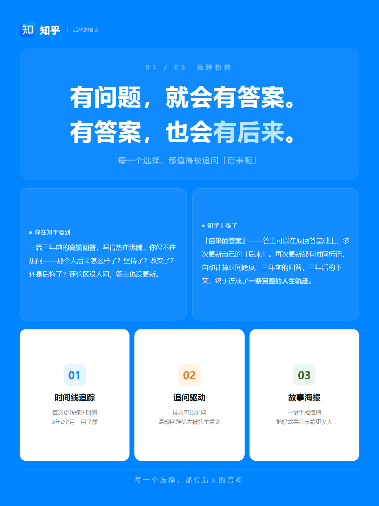
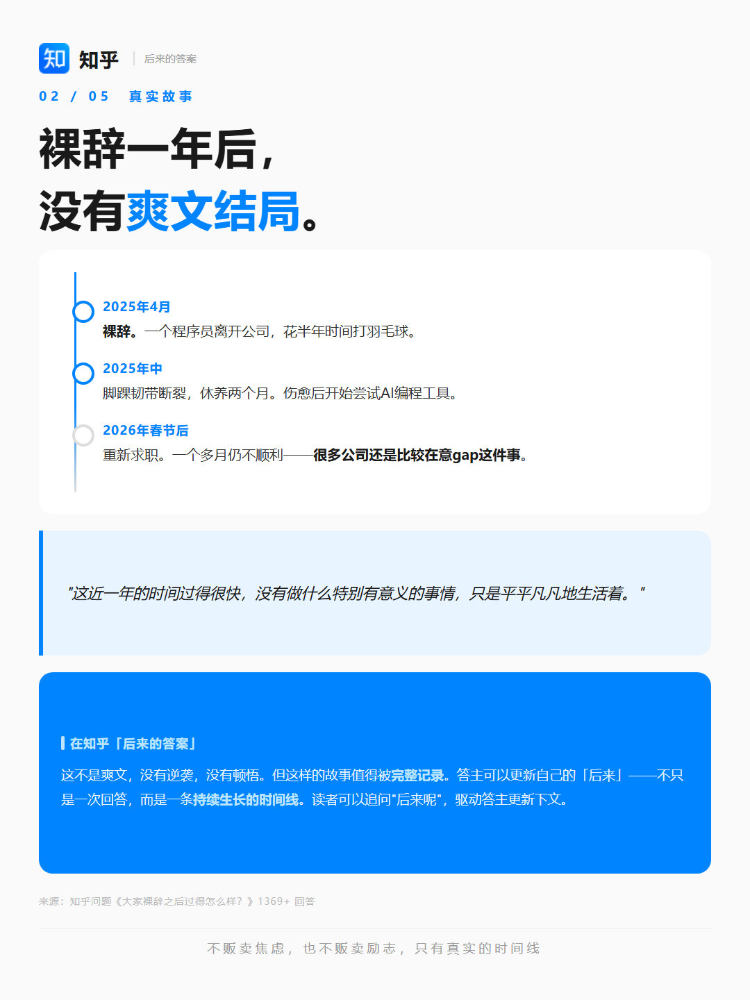
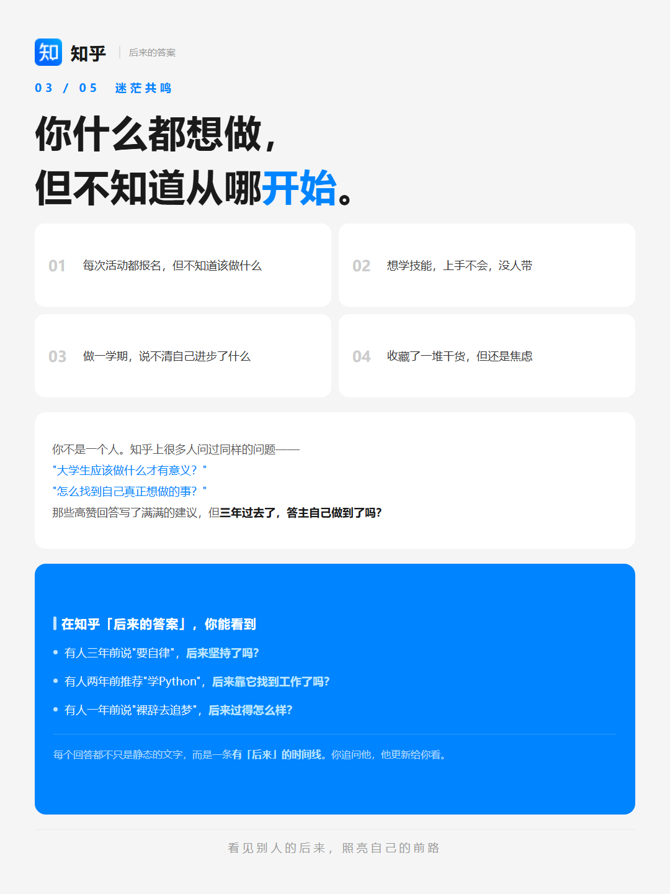
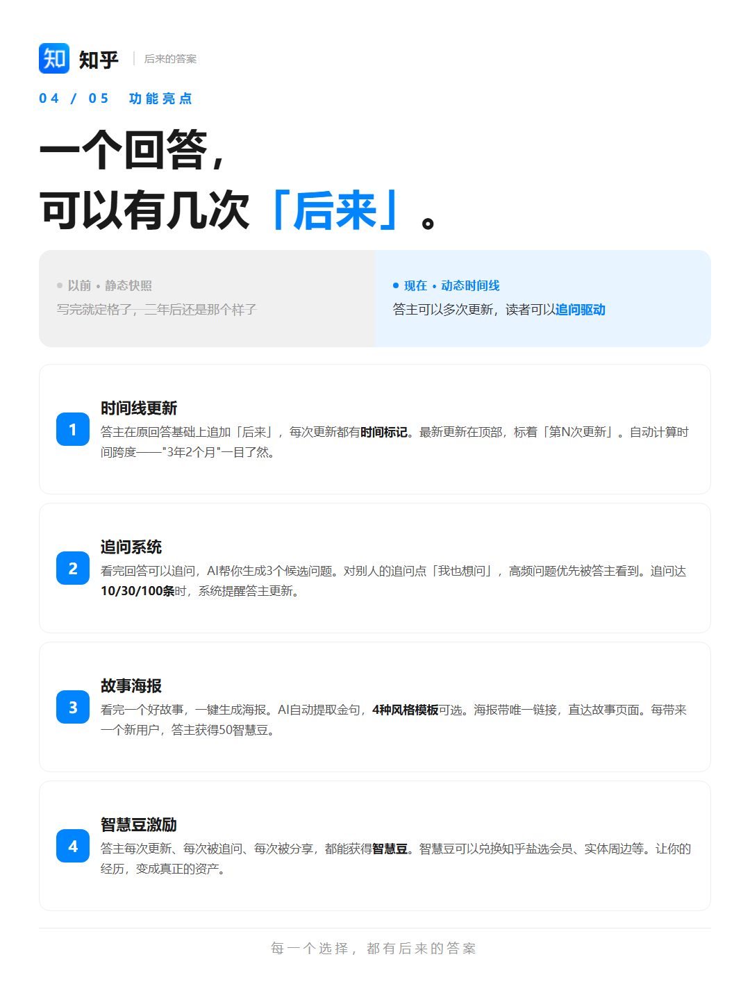
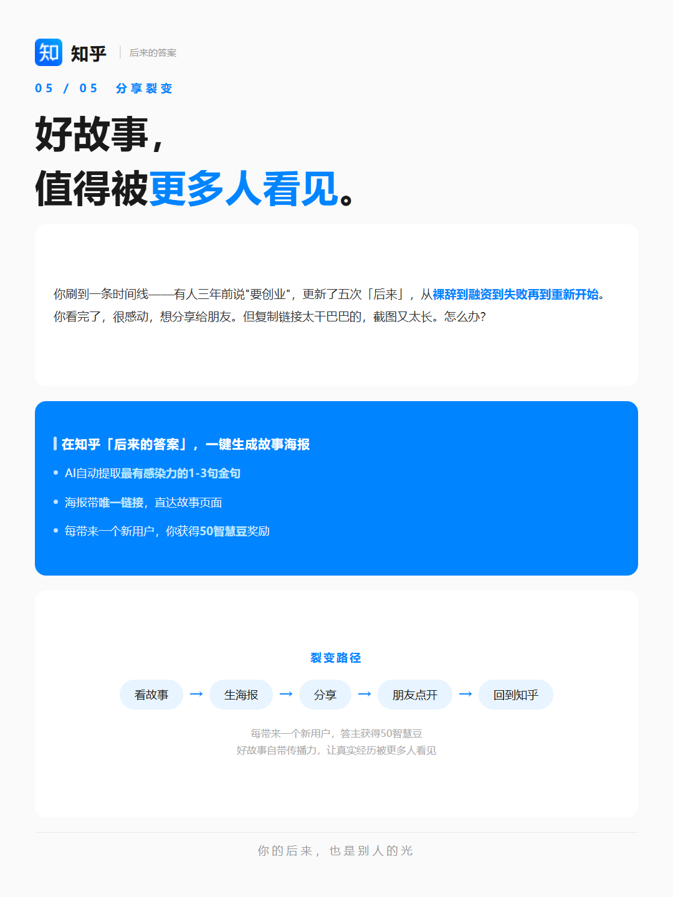

每一个选择 · 都有后来的答案
「后来的答案」是一个基于知乎生态的内容产品，核心功能是帮助用户追踪知乎回答的「后来」——那些年写下的回答，后来怎么样了。
产品分为两个部分：Campaign 引流页（灵魂匹配局）和 Demo 产品页（完整 MVP 功能 Demo，含6大核心功能）。
技术栈：纯静态 HTML + CSS + JavaScript，无后端依赖，无构建工具，浏览器直接打开即可运行。




